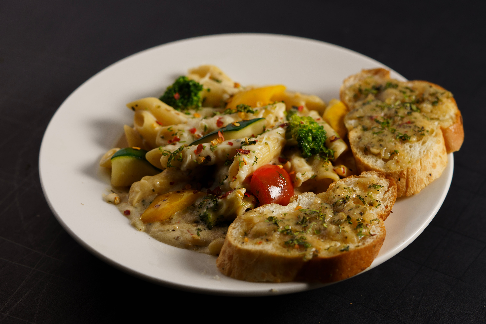

Home

Garlic Pasta
Garlic pasta with herbs and plenty of freshly grated Parmesan cheese.
Chop the garlic so that some is minced and some is in larger pieces.
Ingredients
- (16 ounce) package dry penne pasta
- ½ cup olive oil
- 1 medium head garlic, peeled and chopped
- 2 tablespoons chopped fresh parsley
- 1 tablespoon chopped fresh basil
- 1 tablespoon chopped fresh oregano
- 1 tablespoon red pepper flakes
- 1 cup grated Parmesan cheese
Steps
- Gather all ingredients.
- Cook the pasta according to the package instructions.
- Bring a large pot of lightly salted water to a boil.
Add penne and cook, stirring occasionally, until tender yet firm to the bite, 8 to 10 minutes.
- While the pasta is cooking, add oil and garlic to a large skillet over low heat. Cook until oil is hot and garlic is sizzling,
8 to 12 minutes. Remove from the heat and stir in parsley, basil, oregano, and pepper flakes.
- Drain the pasta and add it to the skillet with the garlic mixture.
- Mix well and top with grated Parmesan cheese.